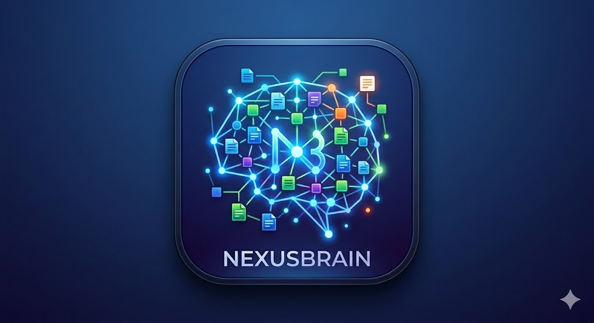

NexusBrain ist die moderne Logseq-Alternative. Organisiere deine Gedanken in Blöcken, entdecke versteckte Verbindungen mit lokaler KI und behalte die volle Kontrolle über deine Daten.
NexusBrain kombiniert die besten Konzepte aus vernetztem Denken mit modernster Technologie.
Ein Logseq-ähnlicher Outliner mit unendlicher Verschachtelung. Fokussiere dich auf einzelne Blöcke und organisiere dein Wissen granular.
Verknüpfe Seiten mit `[[Page]]` und referenziere Blöcke mit `((block))`. Baue ein Netz aus Informationen, das mit dir wächst.
Interaktive visuelle Karte aller Verbindungen. Navigiere intuitiv durch dein Wissensnetz und entdecke Cluster.
Synchronisiere deine Daten sicher via WebDAV (Nextcloud, ownCloud) oder Git. Du behältst die Hoheit über deine Daten.
Erweitere NexusBrain mit JavaScript-basierten Plugins. Passe den Editor und den Workflow genau an deine Bedürfnisse an.
Auf dem Desktop kannst du mehrere Notizen gleichzeitig in separaten Fenstern öffnen – ideal für produktives Arbeiten.
NexusBrain nutzt lokale KI, um dein Wissen zum Leben zu erwecken. Kein Datentransfer in die Cloud, 100% Privatsphäre.
Finde Inhalte basierend auf der Bedeutung, nicht nur auf exakten Keywords. „Such nach Projektideen“ findet auch „Inspiration für neue Apps“.
Die KI schlägt automatisch Tags und Kategorien basierend auf deinen Inhalten vor.
Entdecke während des Schreibens automatisch Verknüpfungen zu anderen Seiten, die du vielleicht vergessen hast.

Ein Vergleich mit den Großen.
| Feature | NexusBrain | Logseq | Obsidian |
|---|---|---|---|
| Block-basiert (Outliner) | Ja | Ja | Nein |
| Native Mobil-App | Exzellent | Mittel | Ja |
| Integrierte Local AI | Native | Plugins | Plugins |
| Cloud-Sync (Eigener Server) | WebDAV/Git | Git (Beta) | Paid Sync |
| UI/UX Design | Modern/Glass | Funktional | Anpassbar |
| Multi-Window Support | Ja | Begrenzt | Ja |
Egal ob Web, Desktop oder Mobile – NexusBrain ist überall dort, wo du deine Gedanken festhalten willst.